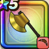

カンダタトマホーク
攻略班 7.0点 / カンダタタックルマッスルポーズ背水のかまえカンダタインパクトこぶん乱舞※錬成で強化可能
くわしい特徴
【レベル別習得スキル】 Lv1【レンジャー】すばやさ+5 Lv1カンダタタックル（消費MP：7）突進して、敵1体に威力160%の体技ダメージを与え、たまに転ばせる Lv10マッスルポーズ（消費MP：10）自分の守備力を1段階上げ、HPを100回復する Lv15背水のかまえ（消費MP：7）1ターンの間ダメージを受けるたびに斬撃ダメージで反撃する状態になる Lv20カンダタインパクト（消費MP：19）敵1体に威力300％の体技ダメージを与え、たまに攻撃力を1段階下げる Lv30こぶん乱舞（消費MP：24）頼りになるこぶんをよび、敵全体に威力245％のジバリア属性体技ダメージを与える Lv35ドラゴン系へのダメージ+5% Lv40悪魔系へのダメージ+5% Lv45攻撃時+2%の確率で猛毒を与える Lv50攻撃力+12錬成スキル改1カンダタインパクト改（消費MP：23）敵1体に威力360%の体技ダメージを与え、たまに攻撃力を1段階下げる改2こぶん乱舞改（消費MP：31）敵全体に威力280%のジバリア属性体技ダメージを与える改3ドラゴン系へのダメージ+10%改4錬成ぶき特別演出解放・メガモン討伐結果発表時に特別演出が追加・武器の見た目に特別なエフェクトが追加 【限界突破スキル】 1凸スキルの斬撃・体技ダメージ+5% 2凸スキルの斬撃・体技ダメージ+5% 3凸スキルの斬撃・体技ダメージ+5% 4凸スキルの斬撃・体技ダメージ+5%